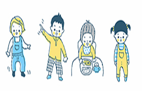

何処か近所にある保育園では幼児の笑顔と元気が溢れています!
社会福祉法人 笑顔の会 何処か近所にある保育園
お電話での お問い合わせ
3741-50-4157
東京都〇〇区〇〇〇1-94-4
-
- 2020年11月25日
- 「クラスの様子」を更新しました!
- 2020年11月16日
- 人気のおやつ ポテトドーナツのレシピ
- 2020年11月4日
- 11月のたのしい行事･地域の方にご参加いただける行事
- 2020年11月3日
- 〔レシピ〕さつまいもブラウニー･サーターアンダギー･パウンドケーキ
- 2020年11月2日
- *与薬に関する主治医意見書用紙 ダウンロード*
- 2020年10月28日
- パート職員(保育補助)の募集
お問い合わせ
社会福祉法人 笑顔の会 何処か近所にある保育園
TEL:3741-50-4157
〒401-4157
東京都〇〇区〇〇〇1-94-4
子育て支援･豆知識
何処か近所にある保育園から
保険だより
給食だより
友の会
0歳児 もも組
1歳児 たんぽぽ･つくし組
2歳児 ちゅうりっぷ･すみれ組
3歳児 ひまわり組
4歳児 さくら組
5歳児 はと組
-
- 何処か近所にある保育園のご紹介
- 何処かに近所にある保育園の歩み
- →何処か近所にある保育園の詳細を見る
- 保育の方針･保育目標
- 保育の方針
- 各クラスの保育目標
- 保険の活動
- 給食目標･食物アレルギーの対応
- →保育の方針･保育目標の詳細を見る
- 園舎案内
- →園舎案内の詳細を見る
- 一時保育
- →一時保育の詳細を見る
- 何処か近所にある保育園のご紹介
- 何処か近所にある保育園の歩み
- 保育の方針･保育目標
- 社会福祉法人 笑顔の会
- 園舎案内
- 一時保育
お問い合わせ
社会福祉法人 笑顔の会 何処か近所にある保育園
TEL:3741-50-4157
〒401-4157
東京都〇〇区〇〇〇1-94-4
子育て支援･豆知識
何処か近所にある保育園から
保険だより
給食だより
友の会
-
- 0歳ｰ初めての園児達同士のふれあい♪
- 入園したての園児達慣れるまでは一人遊びをしがちなので保育園の先生達が遊びに混ざり自然と他の園児達と仲良くなれる様にしています
- 来年のクラスではお友達は増えているかな?
- 好奇心旺盛な子供たちはお互いに関心を持ち始めました
- 1歳ｰ歩行訓練も重ね能力が付いてきました次は知恵を付けさせます
- 読み書きの段階の前に簡単な知恵を付けるお勉強で先生の話を理解する訓練です
- 遊びの幅が来年は広がるかな?
- 好奇心旺盛な男の子は先生に質問しています
- 2歳ｰお外遊びや室内での軽い運動能力を育成しています
- スポーツがこれから出来る様に動く事を頻繁に取り入れた保育をしています
- いつかは遊具でも遊べるかな?
- 園児が明るく活発に動いています保育士さんも体力が大事
- 3歳ｰお外に出歩いてみよう
- 遊具のシャボン玉を使える様になりました
- 小学校向けに何か勉強を取り入れていけるかな?
- お外で楽しくシャボン玉保育士さんの監督の手も段々離れてきました
- 4歳ｰお勉強の時間に力を入れ始めました
- 読み書き能力はここから育っていきます
- 卒園間近に近いクラスです最後は何を学ぶのかな?
- 園児達が思い描く形で字は書けているでしょうか?
- 5歳ｰ卒園式に向けてお歌のレッスン開始
- ピアノに触れる園児も増えてきました
- お父さんお母さんは喜んでくれるかな?
- 自主的に大分色々出来る様になりました
お問い合わせ
社会福祉法人 笑顔の会 何処か近所にある保育園
TEL:3741-50-4157
〒401-4157
東京都〇〇区〇〇〇1-94-4
子育て支援･豆知識
何処か近所にある保育園から
保険だより
給食だより
友の会
-
年間行事
保育園の楽しい行事
月 行事内容 4月 入園式 遠足(5歳児クラス) 5月 遠足(3･4歳児クラス) 親子料理教室 6月 じゃがいも掘り 給食試食会 保育参観 7月 プール開き 夏まつり 合宿(5歳児クラス) 9月 プールじまい お泊り保育(4歳児クラス) 遠足(4･5歳児クラス) 10月 運動会 遠足(2･3歳児クラス) 保育参観 さつまいも掘り 11月 バザー 保育参観 12月 劇あそび 冬まつり会 1月 作品展 2月 豆まき集会 ごっこあそび 新人園児健診 3月 新入園児説明会 卒園式 - 運動会

- 年に1度のお父さんお母さんへのお披露目の運動会、皆元気に走ります。家の我が子が一番になるかならないかの大興奮の運動会です。
- 園児達のお料理


- 日頃食べている物の調理方法を勉強します、美味しく可愛く調理してワクワクの時間です。園児達の柔軟な発想でどんぐりに見立てたあんぱんが出来上がりました。
お問い合わせ
社会福祉法人 笑顔の会 何処か近所にある保育園
TEL:3741-50-4157
〒401-4157
東京都〇〇区〇〇〇1-94-4
子育て支援･豆知識
何処か近所にある保育園から
保険だより
給食だより
友の会
-
- アクセス
- 何処か近所にある保育園までのアクセス のご案内
お問い合わせ
社会福祉法人 笑顔の会 何処か近所にある保育園
TEL:3741-50-4157
〒401-4157
東京都〇〇区〇〇〇1-94-4
子育て支援･豆知識
何処か近所にある保育園から
保険だより
給食だより
友の会
社会福祉法人 笑顔の会 何処か近所にある保育園
〒401-4157 東京都〇〇区〇〇〇1-94-4 TEL:3741-50-4157